| 1: | Consider a household heating system with on-off control. Normally there is a dead band of 2°F; that is, the temperature must drop to 1°F below the setpoint before the heater kicks on, and it must go 1°F above the setpoint before the heater kicks off. Clearly the thermostat/heater has periodic behavior with periods where the heater is on, followed by periods where it is off. Discuss the effect of the dead band on this periodic behavior. Sketch the expected heater (on-off) and temperature profiles (as a function of time) as the dead band is changed. |
| 2: |
Derive the closed-loop transfer functions relating L(s) and r(s) (the disturbance and setpoint, respectively) to ym(s) (the measured output) for the following control block diagram. This block diagram is for a system that has significant measurement and valve dynamics. 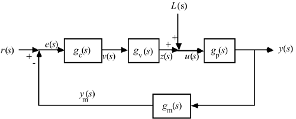 Use the following form: ym(s) = gCL(s) r(s) + gCL1(s) L(s) [that is, find gCL(s) and gCL1(s)]. Also derive the closed-loop transfer functions relating L(s) and r(s) to u(s) (the input to the process).
|
| 3: | Derive the closed-loop transfer function between L(s) and y(s) for the following control block diagram (this is known as a feed forward/feedback controller). 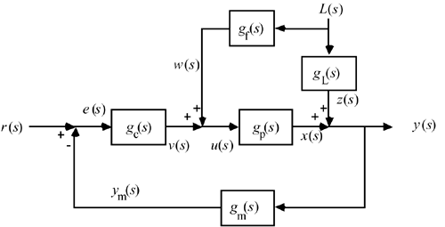
How would you check the stability of the closed-loop system? Will the stability of this system be any different than that of the standard feedback system? Why? |
| 4: | Derive the closed-loop transfer function between r1(s) and y1(s) for the following control block diagram (this is known as a cascade control system). Hint: Find a single block to represent the "inner" feedback loop. 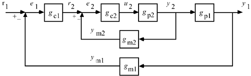
How would you check the stability of the closed-loop system? |
| 5: | Consider the following control instrumentation diagram for a heat exchanger. 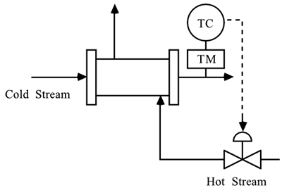
Construct a control block diagram, labeling all signals and transfer functions. Make certain that you include valve and measurement sensor dynamics. Also include at least one important disturbance input. Should the control valve should be fail-open or fail-closed. Why? Based on whether the control valve is fail-open or fail-closed, is the process gain relating the manipulated valve position (or valve top pressure) to the measured temperature positive or negative?
|
| 6: | Consider a first-order open-loop unstable process that has the following transfer function
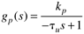
Find the range of values of parameters for a PI controller that stabilize this process. |
| 7: | Calculate the offset to a step setpoint change due to P-only control, for the following process:
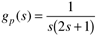
Do you have an interesting result? Explain. |
| 8: | A process has the following transfer function:
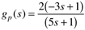
Using a P-only controller, find the range of the controller gain that will yield a stable closed-loop system. |
| 9: | Consider the following open-loop unstable process
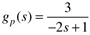
For a PI controller, find the range of stabilizing controller proportional gains (kc) for an integral time constant of tI = 2. |
| 10: | Consider the two following unstable second-order processes:
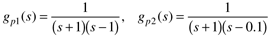
Assume that you can apply a P-only feedback controller to each of these processes. What are the bounds on kc (the controller proportional gain) that will assure stability of the closed-loop system for each process? |
| 11: | Consider the open-loop unstable process transfer function
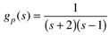
Find the range of kc for a P-only controller that will stabilize this process. It turns out that kc = 2 will yield a stable closed-loop (if this is not in your range from part (a), you should check your results) for this system. In practice there is a measurement lag in the feedback loop. Assuming a first-order lag on the measurement, find the maximum measurement time constant which is allowed before the system (with kc = 2) is destabilized.
|
| 12: | Consider a process with the following transfer function:
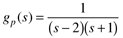
Can a PI controller satisfy the necessary condition for stability of this process? |
| 13: | Consider the following process with a RHP zero:
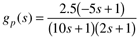
For P-only control, find the bound on the proportional gain to assure closed-loop stability of this process. |
| 14: | A PI controller is used on the second-order process
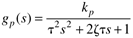
The process parameters are kp = 1, t = 2, z = 0.7. The tuning parameters used are kc = 5, tI = 0.2.
Is the process closed-loop stable? |
| 15: | Consider an isothermal CSTR that has the following reaction scheme
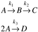
This system exhibits a maximum in the concentration of B vs. dilution rate (Fs/V, where Fs is the steady-state flow rate and V is the constant reactor volume) curve shown in Figure 5-19. In this problem we consider two possible operating points, which we call case 1 and case 2.
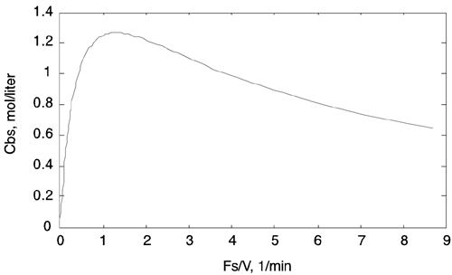
Case 1.
The steady-state dilution rate of Fs/V = 4/7 min–1 is on the left side of the peak shown in Figure 5-19. The transfer function relating the input (dilution rate) to the output (concentration of B) is
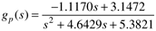
Case 2.
The steady-state dilution rate of Fs/V = 2.8744 min–1 is on the right side of the peak in Figure 5-19. The transfer function relating the input to the output is
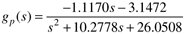
Draw a process and instrumentation diagram for this system. Find the process gain, poles, and zero for the two transfer functions. Are the gains consistent with the steady-state input/output curve? For a P-only controller, find the range of controller gains that will stabilize this system at both operating points (case 1 and case 2).
|
| 16: | Show that, for a stable first-order process, a PI controller will have an oscillatory response if
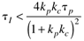
|
| 17: | Compare the effect of kc on the closed-loop stability requirements for the following processes under P-only control:
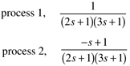
|
| 18: | Consider a second order process (without numerator dynamics),
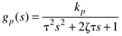
Determine the conditions (range of values) for the PI tuning parameters to assure closed-loop stability. |
| 19: | It is easy to show for the second-order system 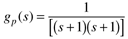 that there is no upper bound on kc for P-only control, so that offset can be minimized by making kc very large. Now consider the more practical case, where there is a measurement lag. How low must tm be to assure that the maximum offset for a setpoint change is 5%? (Hint: Consider the offset of a P-only control system, but also make certain that the closed-loop system satisfies the Routh stability criterion.) |
| 20: | A process is known to have the following input-output transfer function
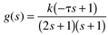
In the process of tuning a P-only feedback controller for this process, the operator discovers a steady-state offset of 2/5 for a unit setpoint change, when the proportional gain is 1. She also finds that the closed-loop system goes unstable when the proportional gain is greater than 2.
What is the value of the process gain, k? What is the value of the numerator time constant, t? What type of instability occurs when the proportional gain is 2? That is, does the closed-loop system oscillate owing to simultaneous crossing of two complex poles across the imaginary axis? Or does a single real pole cross the imaginary axis?
|
| 21: | An open-loop unstable chemical reactor is known to have a process transfer function with the following form, where the manipulated input is the coolant flow rate (liters/minute) and the measured process output is the reactor temperature (°C):
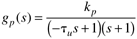
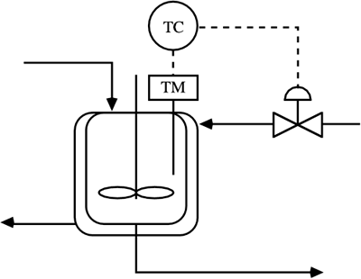
When a P-only controller, with a value kc = -3 lpm/°C, is used, the response to a unit setpoint change is shown below. 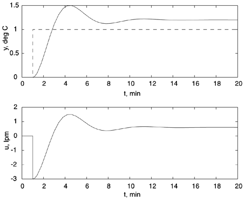
When a PI controller is used, the closed-loop system becomes unstable, as shown below, when the tuning parameter values are kc = -1.333 lpm/°C and tI = 2 minutes. 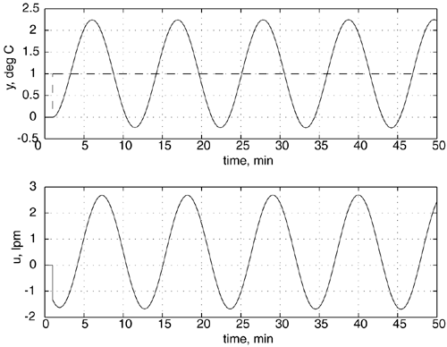
What are the values for the process parameters, kp and tu? Hints: Can the final-value theorem be used? Can the Routh stability criterion be used? |
| 22: | Consider the following chemical process. The concentration of propylene glycol exiting the adiabatic reactor is measured. The output of the concentration controller is a current signal, which is converted to a pressure signal. The pressure signal actuates a control valve that changes the flow rate of steam to a heat exchanger, which changes the temperature of the reactor inlet stream. 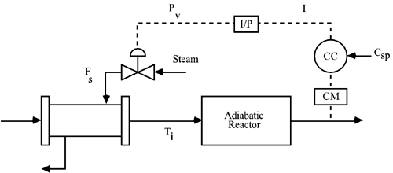
Construct the control block diagram, clearly labeling all signals and blocks. Find the closed-loop transfer function from the concentration setpoint to the measured output.
|
| 23: | Consider a PID controller with a special form that eliminates "derivative kick":
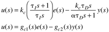
This controller is implemented in block diagram form as shown below. 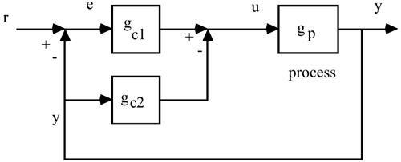
Derive the closed-loop transfer function relating a setpoint change, r, to the process output, y. |
| 24: | Consider Example 5.4. If a PI controller is used, rather than P-only, show that there will not be any offset to a step load disturbance. Also, show the conditions on the tuning parameters for closed-loop stability. |